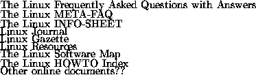

app-sourcesSources of Linux Information
This appendix contains information on various sources of Linux information, such as online documents, books, and more. Many of these documents are available either in printed form, or electronically from the Internet or BBS systems. Many Linux distributions also include much of this documentation in the distribution itself, so after you have installed Linux these files may be present on your system.
These documents should be available on any of the Linux FTP archive sites
(see Appendix  for a list). If you do not have direct
access to FTP, you may be able to locate these documents on other online
services (such as CompuServe, local BBSs, and so on). If you have access
to Internet mail, you can use the ftpmail service to receive these
documents. See Appendix for more information.
for a list). If you do not have direct
access to FTP, you may be able to locate these documents on other online
services (such as CompuServe, local BBSs, and so on). If you have access
to Internet mail, you can use the ftpmail service to receive these
documents. See Appendix for more information.
In particular, the following documents may be found on sunsite.unc.edu in the directory /pub/Linux/docs. Many sites mirror this directory; however, if you're unable to locate a mirror site near you, this is a good one to fall back on.

The Linux Documentation Project (LDP) is working on developing good, reliable documentation for the Linux operating system. The overall goal of the LDP authors is to write documents in various formats that cover installing, configuring, and using Linux. The LDP produces documents in a variety of formats: plain text that you can read anywhere, HTML documents you can read with a browser, man pages that can be read online or in a book, and typeset documentation that can be printed and read in books.
The LDP's ``home'' is its web page, found at http://sunsite.unc.edu/LDP/ and countless mirrors listed at http://sunsite.unc.edu/LDP/hmirrors.html. This is the place to check for updates, news, and some documents that only exist online. A few documents that exist only online are;
In addition to the LDP web pages, there are four basic types of documentation produced by the LDP: Guides, HOWTOs and mini-HOWTOs, man pages, and FAQs.
If you have comments about any particular document in this set, feel free to send it to the author. All documents have the author's email address to send comments to, and while the authors may not always have time to respond, they do read and consider thoughtful comments on their work. Your comments help make the next versions of these documents better. If you have comments or questions about the LDP in general, please contact Greg Hankins via email at <gregh@sunsite.unc.edu>.
Linux Journal is a monthly magazine for and about the Linux community, written and produced by a number of Linux developers and enthusiasts. It is distributed worldwide, and is an excellent way to keep in touch with the dynamics of the Linux world, especially if you don't have access to USENET news.
At the time of this writing, subscriptions to Linux Journal are US$22/year in the United States, US$27 in Canada, and US$37 elsewhere. To subscribe, or for more information, write to Linux Journal, PO Box 55549, Seattle, WA, 98155-0549, USA, or call +1 206 782-7733, or toll free 1-888-66-Linux in North America. Their FAX number is +1 206 782-7191, and e-mail address is linux@ssc.com. You can also find a Linux Journal FAQ and sample articles via anonymous FTP on sunsite.unc.edu in /pub/Linux/docs/linux-journal.
As we have said, not many books have been published dealing with Linux specifically. However, if you are new to the world of UNIX, or want more information than is presented here, we suggest that you take a look at the following books which are available.